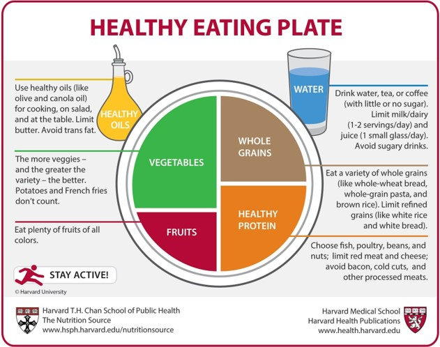

How to have a healthy diet?

Having a healthy diet involves consuming a variety of nutrient-dense foods from all food groups. This includes plenty of fruits and vegetables, whole grains, lean proteins like poultry, fish, beans, and nuts, as well as healthy fats from sources like avocados and olive oil. Limiting processed foods, sugary drinks, and excessive amounts of salt and saturated fats is also important for maintaining a healthy diet. Staying hydrated by drinking an adequate amount of water daily is essential as well. If you're looking for personalized dietary advice, consider consulting with a registered dietitian or nutritionist.